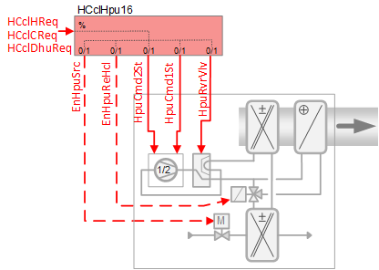
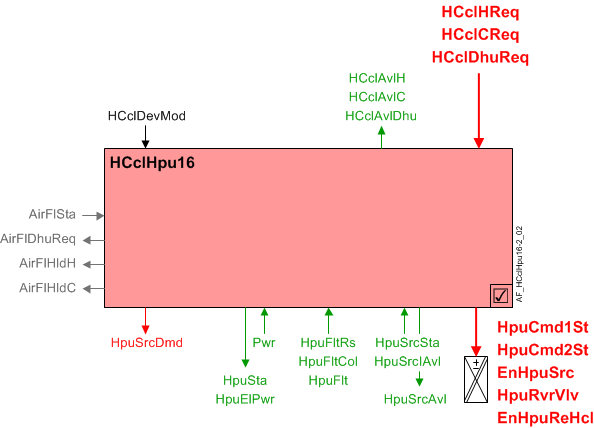

加热/冷却盘管 2 级热泵，两个二进制输出，带换向阀控制和热气加热 (HCclHpu16)
 | 该应用程序功能操作一个2 stage热泵，其reversing valve和热气体reheating coil. 热泵阶段是根据接收到的供暖、制冷和除湿请求信号（来自房间控制器）计算的。 另一个可选的二进制输出可用于启用本地源设备（例如水泵）。 可以连接各种热泵安全开关以及源状态和可用性以及压缩机的电力。 此应用功能适用于两台单速压缩机或一台多速压缩机。 |
Required elements and how to configure them:
元素 | I/O | 信号类型 |
|---|---|---|
HpuCmd1St "Heat pump command first stage" | On-board output, Heat pump control | 2-Stage + Reversing valve |
EnHpuReHcl "Enable heat pump hot gas reheating coil" | On-board output, 热泵热气再加热盘管 | any Normally open |
Function
下图显示了与此应用程序函数关联的 BACnet 对象。主要信号流程总结如下：
接收到需求信号（HCclHReq / HCclCReq / HCclDhuReq）并处理成热泵盘管级位置的二进制输出信号（HpuCmd1St / HpuCmd2St).
基本功能：接受来自关联房间控制器的请求信号并通过设备模式逻辑开关传递；将结果作为命令输出到控制设备的 BACnet 对象。

| 命令或请求（或相关） |
| 条件或状态或可用性的通知 |
| 设备模式 |
| 互锁（内部信号，不是 BACnet 对象；有关其他信息，请参阅互锁部分） |


Sequence – heating, cooling and dehumidification control
如果使用加热、冷却或除湿，接受的请求信号（HCclHReq、HCclCReq、HCclDhuReq）将转换为热泵盘管位置、换向阀位置、源控制和热气再热盘管的二进制输出信号。
Note
这个AF不进行循环控制；它的主要目的是运行命令。循环控制进程（对于此 AF）在“房间”AF 中进行管理，该房间与此 AF 协作以命令终端设备。
Device mode (HCclDevMod):设备模式的输入信号是多状态值。 HCclDevMod 支持以下状态：
- Off
- Control mode
- Fully open, heating
- Fully open, cooling
Availability & Request signals (heating, cooling and dehumidification)
Heating availability:当满足以下条件时，“加热/冷却线圈可用于加热”的二进制输出信号（HCclAvlH) 将为“是”（可用）：
- Device mode = Control mode
- Manual control mode parameter (CtlModMan) = Automatic or Heating
- Present dehumidification request is 0%
- OA temperature not below a configurable limit (optional - see EnLockHTOaLo in Configuration)
当 HCclAvlH 为 Yes，且加热请求信号大于开启点时，加热请求信号将被接受。
Cooling availability:当满足以下条件时，“加热/冷却盘管可用于冷却”(HCclAvlC) 的二进制输出信号将为“是”（可用）：
- Device mode = Control mode
- Manual control mode parameter (CtlModMan) = Automatic or Cooling
- Present dehumidification request is 0%
当 HCclAvlC 为 Yes，并且冷却请求信号大于接通点时，冷却请求信号将被接受。
Dehumidification availability:当满足以下条件时，“加热/冷却盘管可用于除湿”(HCclAvlDhu) 的二进制输出信号将为“是”（可用）：
- Device mode = Control mode
- Manual control mode parameter (CtlModMan) = Automatic or Cooling
当 HCclAvlDhu 为 Yes，且除湿请求信号大于开启点时，除湿请求信号将被接受。
Reversing valve operation
当设备模式 (HCclDevMod) 关闭时，换向阀处于非活动状态。否则，换向阀的位置取决于布尔参数 RvrVlvActv（换向阀激活）的配置。换向阀切换期间的压缩机命令取决于布尔参数 CprStaRvrVlv（换向阀切换期间的压缩机状态）的配置。这两个参数必须根据所使用的热泵的运行类型进行设置。看Configuration.
Changeover delay for heating/cooling
参数 ChovrDlyHC（加热切换延迟/cooling）表示换向阀切换发生之前的最短延迟时间。
如果在换向阀切换期间必须关闭压缩机 (CprStaRvrVlv =Off），只有在压缩机保持关闭时间超过 ChovrDlyHC 后才可以更换换向阀。
如果在换向阀切换期间必须打开压缩机 (CprStaRvrVlv =On)，只有在更改请求持续时间超过 ChovrDlyHC 后才可以更改换向阀。
Heat pump state (HpuSta)
HpuSta 是一个 MCalcVal 对象，指示热泵的运行状态（关闭、加热或冷却）。如果设备模式 (HCclDevMod) 关闭，HpuSta 将关闭。由于此应用程序功能操作换向阀，因此 HpuSta 的值还取决于配置参数 RvrVlvActv（换向阀由以下方式激活）和二进制输出对象 HpuRvrVlv（热泵换向阀）的状态。 HpuRvrVlv 可以是 0：不活动或 1：活动。
当设备模式未关闭时：
- If the reversing valve is activated by cooling (RvrVlvActv = Cooling) and HpuRvrVlv is Active, then HpuSta is Cooling.
- If the reversing valve is activated by heating (RvrVlvActv = Heating) and HpuRvrVlv is Active, then HpuSta is Heating.
Compressor commanding (HpuCmd1St, HpuCmd2St)
0-100% 需求信号（加热、冷却或除湿）用于控制压缩机的输出。需求信号通过两个迟滞开关转换为二进制输出（第 1 级：33% 开启，16% 关闭；第 2 级：83% 开启，66% 关闭）。每个操作阶段的最短开启/最短关闭时间为 3 分钟（3 分钟开启，3 分钟关闭）。时间是可配置的。
Note
房间 AF 中用于制冷、加热和除湿的回路控制对象默认定义为 PID 控制器。要启用分阶段控制，可以根据需要更改每个控制器的以下属性：
- Controller type = Staged controller
- Number of stages = 2
在正常运行期间，级间时间延迟（房间 AF 中回路控制对象的属性；默认 5 分钟）可防止两台压缩机同时通电/循环关闭。然而，如果房间操作模式从舒适或预舒适变为经济或保护并且不存在需求，则两个阶段可以同时关闭。

Equipment protection
压缩机命令的正常运行时优先级为 15（自动模式 6）。在启动和转换（换向阀切换）以及气流状态、最小 On/Off 定时器和源状态监控等联锁功能期间，压缩机以优先级 5（保护模式 2）进行命令，以确保设备保护。
系统按顺序评估一组条件。如果（一旦）发现其中一个为真，则压缩机将以优先级 5 被命令打开或关闭，并且评估序列停止。见表。
IF | THEN | |
|---|---|---|
1 | 风扇的气流状态 = False | 压缩机Off优先级 5 |
2 | 启用监控源状态可用 (EnMonSrcAvl) 已设置为 1：是，并且热泵源状态 (HpuSrcSta) = 0：关闭 | 压缩机Off优先级 5 |
3 | 热泵设备模式 (HcclDevMod) = 关闭 | 压缩机Off优先级 5 |
4 | 压缩机最短开启时间计时器已激活 | 压缩机On优先级 5 |
5 | 压缩机最短关闭时间计时器已激活 | 压缩机Off优先级 5 |
6 | 换向阀切换顺序已激活，且换向阀切换期间压缩机状态参数 (CprStaRvrVlv) 设置为 0：关闭 | 压缩机Off优先级 5 |
7 | 换向阀切换顺序已激活，且换向阀切换期间压缩机状态参数 (CprStaRvrVlv) 设置为 1：打开 | 压缩机On优先级 5 |
如果没有任何条件需要保护，则释放优先级5的热泵压缩机命令。
Source commanding
当当前需求（加热、制冷或除湿）超过开启点时，延迟关闭定时器 (DlyOffEnSrc) 被激活以防止压缩机循环，然后启用源命令 (EnHpuSrc) 和源需求 (HpuSrcDmd) 都将为 True。
Source available for monitoring
此功能表明介质可用并且热泵盘管可以激活。可用源指示可以来自中央组功能 (Prio 15) 或来自本地 BI 传感器输入 (Prio14)。如果启用源可用监控功能（EnMonSrcAvl 为“是”）且源不可用，设备模式将在 Prio 4 处设置为关闭，并且每个温度/dehumidifier 控制器将关闭。

Source state monitoring
源状态表明介质正在流动并且热泵盘管可以被激活。
源状态的类型被配置为标识源的位置（SrcStaMon）。 SrcStaMon 是一个多状态配置参数：
- None – The off command at equipment safety priority to device mode is disabled.
- Monitor enable source - When the source is commanded On, after a delay (DlyOnSrcSta) the compressor will be released; otherwise the compressor is set to off at equipment safety priority.
- Monitor source state - The source state (SrcSta) can come from a local BI sensor in the automation station. When there is no media flow the compressor is set to off at equipment safety priority.

Hot gas reheat coil commanding (EnHpuReHcl)
当满足以下条件时，EnHpuReHcl 将在自动模式 6（Prio 15）下设置为 True：
- Device mode is Control mode
- Room AF indicates heating sequence is active (HCDmd = Heating)
- Present dehumidification request (PrDhuReq) is greater than the switch-on point
Interlocks
Air volume flow status: 当开关指示没有气流时，该组件会以设备安全优先级（Prio 5，保护模式 2）关闭压缩机。当开关指示气流时，向压缩机发出安全命令。

Air volume flow requests (heating, cooling, dehumidification)
Airflow heating request:当当前加热请求信号大于开启点或设备模式为“全开，加热”且手动控制模式为自动或加热时，经过一段延时后，风量流量加热请求将为真。

Airflow cooling request:当当前制冷请求信号大于开启点或设备模式为“全开制冷”且手动控制模式为自动或制冷时，经过一段延时后，风量流量制冷请求将为真。

Airflow dehumidification request:当当前除湿请求信号大于开启点时，经过一段延迟后，除湿风量流量为真。

Airflow hold requests (heating, cooling)
Airflow hold for heating:当当前需求信号大于开启点且换向阀位置为制热时，制热风量保持为真。当当前需求信号小于开启点减去滞后时，经过一段延迟后，用于加热的空气体积流量将为假。

Airflow hold for cooling:当当前需求信号大于开启点且换向阀位置为制冷时，制冷风量保持为真。当当前需求信号小于开启点减去滞后时，经过延迟后，用于冷却的空气体积流量将为假。

表中的信号是内部信号，而不是 BACnet 对象。因此，它们在工具中不可见，但与它们关联的参数却可见。有关影响联锁功能的参数的提示，请参阅注释列。
信号 | 类型 | 方向 | 描述 | 评论 |
|---|---|---|---|---|
AirFlSta | 布尔值 | In | 气流状态 | 热泵盘管暂无相关参数。 AirFlSta 是硬编码的。 |
AirFlCReq | 布尔值 | 出去 | 气流冷却要求 | 有关名为“...AirFlCReq”的参数，请参阅配置部分。 |
AirFlHReq | 布尔值 | 出去 | 气流加热要求 | 有关名为“...AirFlHReq”的参数，请参阅配置部分。 |
AirFlDhuReq | 布尔值 | 出去 | 风量除湿要求 | 有关名为“...AirFlDhuReq”的参数，请参阅配置部分。 |
AirFlHldC | 布尔值 | 出去 | 保持气流以进行冷却 | 有关名为“...AirFlHldC”的参数，请参阅配置部分。 |
AirFlHldH | 布尔值 | 出去 | 保持气流以供加热 | 有关名为“...AirFlHldH”的参数，请参阅配置部分。 |
AirManOff | 布尔值 | In | 空气手动关闭 |
|
Equipment output limits
为了避免结冰和制冷剂问题，规范可能要求在外部空气非常冷时关闭热泵的逻辑。默认情况下，以下热泵锁定功能未激活。要启用它，EnLockHpuTOaLo必须设置为 1：是。
当测量的 OA 温度值低于配置的切断温度时，设备模式 (HcclDevMod) 将在设备安全优先级 (Prio 4) 下设置为关闭。当 OA 温度升至切断温度加上配置的死区以上时，HcclDevMod 从优先级 4 中释放并返回到正常控制。

Fault inputs
可以连接多个热泵安全开关来关闭设备，包括：
- Low suction pressure
- High compressor pressure
- High refrigerant pressure
- Low refrigerant pressure
Note
请参阅 Hvac17 房间部分 AF 了解如何配置冷凝水液位监视器。暖通空调17
可选的二进制输入对象拾取任何热泵设备警报开关。当开关指示故障时，组件会以设备安全优先级 (Prio 4) 将设备模式设置为关闭。用于冷却和除湿的“可用”信号也会关闭。当交换机指示没有故障时，设备模式命令被禁用。

Heat pump compressor power
提供压缩机的标称电力使用量，用于能源监控以及与其他设备的协调。当一级热泵盘管开启时，压缩机电力 (HpuElPwr) 等于额定功率 (NomElPwr) 的一半。 NomElPwr 可以从热泵铭牌（来自热泵制造商）获得。当热泵盘管的两级都打开时，压缩机电功率等于NomElPwr。当热泵盘管关闭时，HpuElPwr 等于零。

Configuration
 Parameters
Parameters
描述 | 范围 | 默认值 |
|---|---|---|
Nominal electric power | NomElPwr | 0.4 [kW] |
Heat pump power 0:Calculated | HpuPwr | 0:Calculated |
Manual control mode 1:Automatic | CtlModMan | 1:Automatic |
Enable fault input 0:No | EnFltIn | 0:No |
Compressor | ||
Minimum switch-on time for compressor | TiOnMinCpr | 3 [min] |
Minimum switch-off time for compressor | TiOffMinCpr | 3 [min] |
Reversing valve | ||
Reversing valve activated by 0:Heating | RvrVlvActv | 1:Cooling |
Compressor state during switchover reversing valve 0:Off | CprStaRvrVlv | 0:Off |
Changeover delay for heating/cooling | ChovrDlyHC | 300 [s] |
Source | ||
Switch-on point for enable source | SwiOnPtEnSrc | 33 [%] |
Hysteresis for enable source | HysEnSrc | 16 [%] |
Switch-off delay for enable source | DlyOffEnSrc | 0 [s] |
Source state monitoring 1:None | SrcStaMon | 1:None |
Switch-on delay for source state | DlyOnSrcSta | 0 [s] |
Enable monitoring source state available 0:No | EnMonSrcAvl | 0:No |
Low outside air temperature lockout | ||
Enable lockout heat pump at low outside air temperature 0:No | EnLockHpuTOaLo | 0:No |
Lockout heat pump at low outside air temperature | LockHpuTOaLo | 4 [°C] |
Outside air temperature hysteresis for lockout heat pump | HysTOaLockHpu | 1 [K ] |
Enable lockout heating at low outside air temperature 0:No | EnLockHTOaLo | 0:No |
Lockout heating at low outside air temperature | LockHTOaLo | 4 [°C] |
Outside air temperature hysteresis for lock out heating | HysTOaLockH | 1 [K] |
Interlocks | ||
Switch-on point for air volume flow hold cooling | SwiOnAirFlHldC | 33 [%] |
Hysteresis for air volume flow hold cooling | HysAirFlHldC | 16 [%] |
Switch-off delay for hold signal for air volume flow cooling | DlyOffAflHldC | 0 [s] |
Switch-on point for air volume flow hold heating | SwiOnAirFlHldH | 33 [%] |
Hysteresis for air volume flow hold heating | HysAirFlHldH | 16 [%] |
Switch-off delay for hold signal for air volume flow heating | DlyOffAflHldH | 0 [s] |
Switch-on point for air volume flow cooling request | SwiOnAirFlCReq | 33 [%] |
Hysteresis for air volume flow cooling request | HysAirFlCReq | 16 [%] |
Switch-on delay for air volume flow cooling request | DlyOnAirFlCReq | 0 [s] |
Switch-on point for air volume flow heating request | SwiOnAirFlHReq | 33 [%] |
Hysteresis for air volume flow heating request | HysAirFlHReq | 16 [%] |
Switch-on delay for air volume flow heating request | DlyOnAirFlHReq | 0 [s] |
Switch-on point for air volume flow dehumidification request | SwiOnAflDhuReq | 33 [%] |
Hysteresis for air volume flow dehumidification request | HysAirFlDhuReq | 16 [%] |
Switch-on delay for air volume flow dehumidification request | DlyOnAflDhuReq | 0 [s] |
Switch-off delay for air volume flow dehumidification request | DlyOfAflDhuReq | 0 [s] |
Internal settings – do not change | ||
Temperature unit | TUnit | [°C] |
Temperature difference unit | TDiffUnit | [K] |
Interface
界面 | 描述 | 类型 | 参考号 | 拥有者 | |
|---|---|---|---|---|---|
HpuCmd1St | Heat pump command first stage 0:Off | BO | ◉ | Room segment / Field device | |
HpuCmd2St | Heat pump command second stage 0:Off | BO | ◉ | Room segment / Field device | |
EnHpuSrc | Enable heat pump source 0:No | BO | ◉ | Room segment / Field device | |
HpuRvrVlv | Heat pump reversing valve 1:Heating | BO | ◉ | Room segment / Field device | |
EnHpuReHcl | Enable heat pump hot gas reheating coil 0:No | BO | ◉ | Room segment / Field device | |
HpuFltCol | Collection of heat pump fault | ColView | ● | - | |
| HpuFltRs | Result of heat pump fault 0:Normal | BCalcVal | ● | - |
HpuFlt | Heat pump fault 0:Normal | BI | ◉ | Room segment / Field device | |
HpuSrcSta | Heat pump source state 0:Off | BI | ◉ | Room segment / Field device | |
HpuSrcInAvl | Heat pump source input available 0:No | BI | ◉ | Room segment / Field device | |
HpuSrcAvl | Heat pump source available 0:No | BPrcVal | ● | - | |
Pwr | Power | AI | ◉ | Room segment / Field device | |
HCclDevMod | Heating/cooling coil device mode 1:Off | MPrcVal | ● | - | |
HCclCReq | Heating/cooling coil cooling request | ACalcVal | ● | - | |
HCclHReq | Heating/cooling coil heating request | ACalcVal | ● | - | |
HCclDhuReq | Heating/cooling coil dehumidification request | ACalcVal | ● | - | |
HCclAvlC | Heating/cooling coil available for cooling 0:No | BCalcVal | ● | - | |
HCclAvlH | Heating/cooling coil available for heating 0:No | BCalcVal | ● | - | |
HCclAvlDhu | Heating/cooling coil available for dehumidification 0:No | BCalcVal | ● | - | |
HpuSta | Heat pump state 1:Off | MCalcVal | ● | - | |
HpuElPwr | Heat pump electric power | ACalcVal | ● | - | |
HpuSrcDmd | Heat pump source demand 0:No | BCalcVal | ● | - | |
SplyHpu | Supply chain for heat pump | GrpMbr | ● | - | |
Engineering and commissioning
布尔参数 RvrVlvActv 和 CprStaRvrVlv 必须与所使用的热泵设备的操作类型相匹配。看Configuration.
房间 AF 中的回路控制对象（制冷、加热和除湿各一个）默认定义为 PID 控制器。要启用分阶段控制，可以根据需要更改每个控制器的以下属性：
- Controller type = Staged controller
- Number of stages = 2
布尔参数 EnLockHTOaLo 和 EnLockHpuTOaLo 默认设置为 No。设置为“是”将需要从现场面板发送 TOa（外部空气温度）值。如果参数设置为 Yes 并且 TOa 传感器不存在（或信号无效），设备模式 (HCclDevMod) 将在设备保护优先级设置为 Off，从而关闭压缩机。要禁用该功能，无论是出于启动期间的测试目的还是出于系统设计需要，请将参数设置为否。
Water source heat pump use cases
以下四个示例列出了可选水源配置的对象和参数。
1) Loop water source controlled externally
- Binary process value HpuSrcAvl written from Central
循环水源外部控制 | ||||
|---|---|---|---|---|
描述 | 简称 | 类型 | 价值 | 评论 |
热泵源状态 | HpuSrcSta | BI | - | 本地二进制输入 （本配置中未使用） |
可用热泵源输入 | HpuSrcInAvl | BI | - | 本地二进制输入 （本配置中未使用） |
可用热泵源 | HpuSrcAvl | BPrcVal | - | 二进制过程值对象 在这个用例中，HpuSrcAvl根据来自 Central 的命令启用或禁用 HpuDevMod。如果 HpuSrcAvl = 否，则 HpuDevMod 设置为 1：在优先级 4 处关闭。 |
启用监控源状态可用 | EnMonSrcAvl | 布尔值 | 是的 | 配置参数 必须设置为 Yes 才能启用监控HpuSrcAvl. |
源状态监控 | SrcStaMon | 多态 | 1：无 | 配置参数 |
启用热泵源 | EnHpuSrc | BO | - | 二进制命令输出 （本配置中未使用） |
2) Loop water source controlled externally with local source monitoring
- Binary process value HpuSrcAvl written from Central or by local binary input
通过本地水源监控进行外部控制的循环水源 | ||||
|---|---|---|---|---|
描述 | 简称 | 类型 | 价值 | 评论 |
热泵源状态 | HpuSrcSta | BI | - | 本地二进制输入 （本配置中未使用） |
可用热泵源输入 | HpuSrcInAvl | BI | - | 本地二进制输入 有效的本地输入会覆盖中央状态HpuSrcAvl优先级为 14。 |
可用热泵源 | HpuSrcAvl | BPrcVal | - | 二进制过程值对象 在这个用例中，HpuSrcAvl根据来自 Central 的命令或 HpuSrcInAvl 的状态启用或禁用 HpuDevMod。如果 HpuSrcAvl = 否，则 HpuDevMod 设置为 1：在优先级 4 处关闭。 |
启用监控源状态可用 | EnMonSrcAvl | 布尔值 | 是的 | 配置参数 必须设置为 Yes 才能启用监控HpuSrcAvl. |
源状态监控 | SrcStaMon | 多态 | 1：无 | 配置参数 |
启用热泵源 | EnHpuSrc | BO | - | 二进制命令输出 （本配置中未使用） |
3) Local ground source controlled locally
- Local command of valve or pump
- No Central command used
本地地源本地控制 | ||||
|---|---|---|---|---|
描述 | 简称 | 类型 | 价值 | 评论 |
热泵源状态 | HpuSrcSta | BI | - | 本地二进制输入 （本配置中未使用） |
可用热泵源输入 | HpuSrcInAvl | BI | - | 本地二进制输入 （本配置中未使用） |
源状态监控 | SrcStaMon | 枚举 | 2：监控使能源 | 配置参数 设置为“监视启用源”以启用监视EnHpuSrc. |
启用热泵源 | EnHpuSrc | BO | - | 二进制命令输出 启用/打开阀门或泵。 |
使能源的关闭延迟 | DlyOffEnSrc | 未签名 | 60s | 配置参数（默认 = 0）。 设置为一个值（例如 60 秒），允许泵或阀门保持打开/打开一段时间，以防止在没有需求时循环。 |
启用监控源状态可用 | EnMonSrcAvl | 布尔值 | No | 配置参数 |
4) Local ground source controlled locally, with monitoring of local source
- Local command of valve or pump
- Monitoring of local source state
- No Central command used
本地地面源本地控制，本地源监控 | ||||
|---|---|---|---|---|
描述 | 简称 | 类型 | 价值 | 评论 |
热泵源状态 | HpuSrcSta | BI | - | 用于介质流或泵状态的本地二进制输入。 当有效输入 = 关闭时，热泵命令在优先级 5 处禁用。 |
可用热泵源输入 | HpuSrcInAvl | BI | - | 本地二进制输入 （本配置中未使用） |
源状态监控 | SrcStaMon | 枚举 | 3：监控源状态 | 配置参数 设置为“监视源状态”以启用监视HpuSrcSta. |
启用热泵源 | EnHpuSrc | BO | - | 二进制命令输出 启用/打开阀门或泵。 |
使能源的关闭延迟 | DlyOffEnSrc | 未签名 | 60s | 配置参数（默认 = 0）。 设置为一个值（例如 60 秒），允许泵或阀门保持打开/打开一段时间，以防止在没有需求时循环。 |
启用监控源状态可用 | EnMonSrcAvl | 布尔值 | No | 配置参数 |